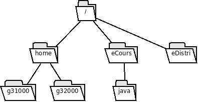

Supposons que le répertoire courant est le dossier personnel /home/adam
Quelle commande permet de supprimer le répertoire imgs et son contenu en utilisant un chemin absolu ?
,rm -r /home/adam/imgs,rm -r /home/adam/imgs,rm -r ~/imgs
Quelle commande permet de supprimer le répertoire imgs et son contenu en utilisant un chemin relatif ?
,rm -r imgs,rm -r imgs,rm -r ./imgs
Quelle commande permet de créer un répertoire imgs
dans le répertoire eve en utilisant un chemin relatif ?
,mkdir ../eve/imgs,mkdir ../eve/imgs,mkdir ./../eve/imgs
Quelle commande permet de créer un fichier mesImages
dans le répertoire imgs du répertoire eve en utilisant un chemin absolu ?
,nano /home/eve/imgs/mesImages,nano /home/eve/imgs/mesImages
Quelle commande permet de copier ce fichier mesImages
que vous venez de créer dans le répertoire courant en utilisant que des
chemins relatifs ?
,cp ../eve/imgs/mesImages .,cp ../eve/imgs/mesImages .

La ligne de commande
Supposons que le répertoire courant est le dossier personnel /home/g31000
Quelle commande permet de supprimer le répertoire java et son contenu en utilisant un chemin absolu ?
,rm -r /eCours/java,rm -r /eCours/java
Quelle commande permet de supprimer le répertoire java et son contenu en utilisant un chemin relatif ?
,rm -r ../../eCours/java,rm -r ../../eCours/java,rm -r ./../../eCours/java
Quelle commande permet de créer un répertoire tds
dans le répertoire g32000 en utilisant un chemin relatif ?
,mkdir ../g32000/tds,mkdir ../g32000/tds,mkdir ./../g32000/tds
Quelle commande permet de créer un fichier Ex.java
dans le répertoire tds
du répertoire g32000 en utilisant un chemin relatif ?
,nano ../g32000/tds/Ex.java,nano ../g32000/tds/Ex.java,nano ./../g32000/tds/Ex.java
Quelle commande permet de copier ce fichier Ex.java
que vous venez de créer dans le répertoire courant en utilisant que des
chemins relatifs ?
,cp ../g32000/tds/Ex.java .,cp ../g32000/tds/Ex.java .,cp ./../g32000/tds/Ex.java .
Quelle commande permet de lister au format long le dossier personnel en
utilisant un chemin absolu ?
,ls -l ~,ls -l ~, ls -l /home/g31000